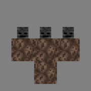

Nie atakują gracza nigdy
Zwierze hodowlane,które dropi skórę i mięso
Zwierze hodowlane,dropi wełnę i mięso.
Zwierze hodowlane,dropi pióro i mięso,co jakiś czas wyrzuca jajka
Ryba,dropi dorsza
Osadnik-można z nim handlować za szmaragdy,oferuje oferty zależne od jego aktualnego zawodu.Jego zawody to:Bibliotekarz, Kamieniarz, Kapłan, Kartograf, Łuczarz, Narzędziarz,Płatnerz, Rybak, Rzeźnik, Zbrojmistrz
Moby Neutralne - Nie będa atakować gracza jeśli go sprowokujemy zaatakuje.
Można go owoić na psa za pomocą kości. Nic nie dropi.
Chroni osadników przed potworami.Można go zbudować z 4 bloków żelaza i dyni.
Występuje tylko na biomie arktycznym
Atakują gracza zawsze
Najpowszechniejszy i najsłabszy potór w mc. Dropii zgniłe mięso i żelazo
Łucznik,który walczy z dystansu.Należy na niego uważać,gdy jesteśmy w jaskiniach.Dropii strzałę,kość i łuk.
Potwór z bardzo małym zdrowiem.Potrafii wspinać się po ścianach.Dropii nić i oko pająka.
Potwór,który podchodzi do gracza i wybucha po kilku sekundach zadając ogromne obrażenia
Pokonanie smoka kresu to symboliczne przejście gry.Na początku walki trzeba zniszczyć wszystkie kryształy kresu położonych na wieży z obsydianów,największe wieże mają dodadkowo kraty blokujące ostrzał z łuków. Leczą one smoka Endu bardzo szybko i należy najpierw zniszczyć je, a dopiero w następnej kolejności atakować smoka. Warto mieć założoną zaklętą zbroję, ponieważ sprawia ona, że smok nie zada graczowi obrażeń, tylko będzie go popychał. Zniszczenie kryształu Endu podczas leczenia smoka zada mu spore obrażenia. Smok ma pewną cechę Endermana - kiedy się na niego spojrzy, ten odlatuje i zaatakuje nas dopiero wtedy, kiedy spuści się z niego celownik. Smok Endu niszczy też wszystkie bloki, jakich dotknie (oprócz obsydianu, kamienia Endu, skały macierzystej, Kryształów Endu, krat oraz niezniszczalnych bloków, takich jak blok poleceń czy bariera). Nie warto używać lawy, gdyż smok jest odporny na ogień. Smok Endu otrzymuje większe obrażenia z ataków wręcz niż z dystansowych. Można też wykorzystać łóżka, które w Endzie eksplodują po próbie położenia się na nich. Smok pośmiertnie eksploduje, upuszczając wystarczającą ilość kul doświadczenia, aby z poziomu zerowego zdobyć 74. W fontannie pojawia się portal, a na niej pojawiają się 4 pochodnie i jajo smoka. Obok wyspy pojawi się brama Endu. Po wejściu do portalu pojawi się 9-minutowy poemat Endu, po którym gracz wraca do swojego świata. Aby pominąć tę rozmowę wystarczy nacisnąć Esc. Po powrocie do Endu, smok nie odrodzi się samoistnie. Można go odrodzić stawiając na fontannie 4 kryształy Endu, po czym pojawia się animacja odnawiania słupów, a na końcu znika portal, pochodnie i jajo, a smok powraca. Po ponownym zabiciu pojawia się kolejna brama i doświadczenie.
Wither jest nieumarłym bossem, który lata i strzela eksplodującymi czaszkami w kierunku gracza i mobów. Jest to jedyny agresywny mob, którego tylko gracz może stworzyć. Wither jest mobem, który pojawia się po wybudowaniu totemu. Totem to ułożone 4 bloki piasku dusz lub gleby dusz w kształt litery T i 3 czaszki mrocznego szkieleta położone na trzech wyższych blokach. Ostatnim ułożonym blokiem musi być któraś z trzech czaszek. Bloki powietrza obok bazy totemu są wymagane (niesolidne bloki, takie jak trawa lub kwiaty, zapobiegają utworzenia się Withera). Po przywołaniu Withera, jest on agresywny i wywołuje eksplozję wokół siebie.Tak jak inne agresywne moby, Wither znika po zmianie poziomu trudności na pokojowy. Totem jest również nieużyteczny na pokojowym poziomie trudności, po wybudowaniu nic nie robi.Totem wygląda nastepująco:
Po spawnie Wither rośnie, a jego pasek życia uzupełnia się. W tym czasie Wither jest nietykalny, nie porusza się ani nie atakuje. Po 10 sekundach tworzy wielką eksplozję, która niszczy pobliskie bloki i zadaje do 68 obrażeń mobom i graczom w pobliżu. Ta eksplozja jest mocniejsza niż eksplozja naładowanego Creepera i kryształu Endu i towarzyszy jej głośny, straszliwy dźwięk słyszalny na całym świecie i we wszystkich wymiarach. Po tej eksplozji Wither atakuje pobliskie moby i gracza. Wither jest odporny na ogień, lawę i topienie się. Zatrzaskiwanie Withera jest zwykle nieefektywne, ponieważ po otrzymaniu obrażeń niszczy wszystkie bloki, których dotyka. Nie może jednak zniszczyć skały macierzystej, bloku portalu bramu Endu, ramy portalu Endu, bloku poleceń, bloku struktur, bloku konstrukcyjnego, bariery i ruszających się tłoków. Może więc zostać uduszony na przykład w fontannie Endu. Tak jak pozostałe nieumarłe moby, otrzymuje obrażenia od mikstur leczących, a leczy się od mikstur szkody i od uderzeń broni zaklętych na pogromcę nieumarłych. Wither jest odporny na działanie innych efektów, podobnie jak smok Endu.